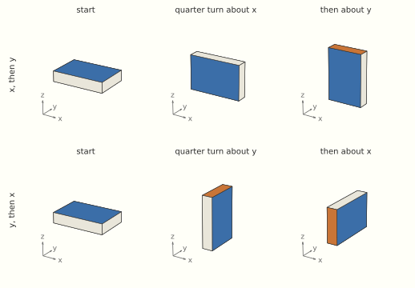
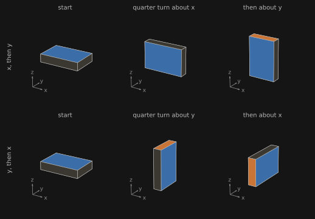

The Standard of Motion: The Mathematics
A primer on bundles and connections, Heller’s ladder of space-times in frame-bundle terms, the Hamiltonian brackets, the kinematical Lie algebras and their contractions, mass as a central charge, algebraic and structural stability, moving patterns in cellular automata, and the Bombelli–Henson–Sorkin theorem
This page accompanies The Standard of Motion. It writes out the structures the essay describes in prose. Section 0 is a short primer on bundles and connections. The numbering continues on The Demon Is a Learner: The Mathematics, from §7. Section 1 follows Michał Heller, “Evolution of Space-Time Structures”, Concepts of Physics 3 (2006) 117–131; the other sections are standard material, with sources given where they are used.
Notation: indices i, j, k run over three spatial directions; \varepsilon_{ijk} is the Levi-Civita symbol; repeated indices are summed.
0. Bundles and connections in brief
This section collects the differential geometry that Section 1 uses. It aims at the ideas, with one or two formulas each; Kobayashi and Nomizu, Foundations of Differential Geometry, vol. 1, is the standard full treatment.
Manifolds and tangent spaces. A manifold X of dimension n is a space that looks like \mathbb R^n near each point: it can be covered by coordinate charts that overlap smoothly. Space-time is a manifold of dimension 4. At each point x the velocities of curves through x form an n-dimensional vector space, the tangent space T_xX. Vectors at different points live in different tangent spaces, and nothing in the bare manifold says how to compare them. Whether two distant bodies move in parallel is not yet a meaningful question.
Bundles. A fiber bundle over X is a space E with a projection \pi: E\to X whose fibers \pi^{-1}(x) are all copies of one space F, and which looks like a product U\times F over every small enough region U of X. It is trivial if it is a product X\times F globally. The standard pair of examples are bundles over a circle with an interval as fiber: the cylinder is trivial, and the Möbius band is not, though every short arc of it looks like a strip of cylinder. Aristotelian space-time A = T\times S is a trivial bundle over T and over S. Newtonian space-time is a bundle over absolute time whose fibers are the simultaneity slices; it is not a product, because there is no absolute place to identify the slices with one another. The tangent spaces of a manifold together form the tangent bundle TX, with fiber \mathbb R^n.
Sections. A section of a bundle picks one point of each fiber, smoothly: a map \sigma: X\to E with \pi\circ\sigma = \mathrm{id}. The familiar example is a vector field. It attaches one tangent vector to each point of X, so it picks one point in each fiber of the tangent bundle. Some bundles have no sections of a desired kind. On the sphere S^2, every vector field vanishes somewhere. This is the hairy ball theorem.
Frame bundles. A frame at x is an ordered basis of T_xX, equivalently a linear isomorphism u:\mathbb R^n\to T_xX. The frame bundle F(X) collects all frames at all points. When the manifold carries extra structure, one keeps only the adapted frames: orthonormal frames of a Lorentzian metric, related to one another by Lorentz transformations, or the frames of Newtonian space-time that respect absolute time and the spatial metric, related by rotations and Galilean boosts. In each case a group G acts on every fiber, and any two frames at the same point differ by exactly one element of G. A bundle with this property is a principal G-bundle. For a principal bundle, a global section already gives a global product: once one frame is chosen at each point, every other frame is that frame times a unique group element, so F(X)\cong X\times G. A manifold whose frame bundle has a global section is called parallelizable: it carries n vector fields that form a basis at every point.
- The plane and the torus are parallelizable. A torus can be glued from a square by identifying opposite edges. The two directions of the square’s sides survive the gluing, and they give two vector fields that are independent everywhere.
- The sphere S^2 is not. The first vector of a global frame would be a vector field with no zeros. Choosing a nonzero vector at each point separately is easy; what the hairy ball theorem rules out is a choice that varies continuously, as a section must. In the theorem’s usual image, a continuous field is a way of combing hair flat over the sphere, with no partings, and a zero is a cowlick: however the sphere is combed, a cowlick remains. The theorem needs only continuity, so smoothness adds nothing to the obstruction. More generally, by the Poincaré–Hopf theorem, a compact surface has a vector field without zeros only if its Euler characteristic is zero. The sphere’s is 2, the torus’s is 0.
- The sphere’s frame bundle can be seen whole. Take a point x of the unit sphere and an orthonormal frame (e_1, e_2) of the tangent plane there, oriented so that (x, e_1, e_2) is right-handed. The three vectors are the columns of a rotation matrix, and every rotation arises from exactly one such choice. So the bundle of oriented orthonormal frames of S^2 is the rotation group SO(3). A product would be S^2\times SO(2), a sphere times a circle, and the two spaces differ. In S^2\times S^1, a loop that runs once around the circle factor cannot be shrunk to a point, and neither can that loop run twice. In SO(3), the corresponding loop is a full turn about one axis. It cannot be shrunk either, but run twice it can, which is Dirac’s belt trick.
- Some parallelizable spaces are less obvious. The three-sphere S^3 is the group of unit quaternions. Choosing a frame at the identity and multiplying it by each group element spreads it over the whole space, and the same works for every Lie group, a group whose elements vary continuously (Section 3 explains Lie groups and their Lie algebras, starting from time). Among space-times, Geroch showed that a noncompact four-dimensional space-time has a spin structure exactly when it is parallelizable (§1, In what sense “product”). The space-times of physics are typically parallelizable as bare manifolds, which is why Section 1 asks for frames that are parallel, not merely global.
Connections. A connection is a rule for carrying vectors along curves, parallel transport. Infinitesimally it is a covariant derivative \nabla, which in coordinates reads \nabla_\mu V^\nu = \partial_\mu V^\nu + \Gamma^\nu_{\mu\lambda}V^\lambda, with the connection coefficients \Gamma^\nu_{\mu\lambda} saying how the coordinate basis turns from point to point. A vector field along a curve is parallel if its covariant derivative along the curve vanishes. A curve whose own velocity is parallel is a geodesic: \ddot x^\nu + \Gamma^\nu_{\mu\lambda}\,\dot x^\mu\dot x^\lambda = 0. This is the first law in geometric form. A connection on space-time picks out the curves that need no force, so it is Heller’s standard of motion as a piece of geometry. Newton’s first law says that the geodesics are straight lines traversed uniformly; general relativity says that they are the paths of free fall.
Curvature. Carry a vector around a small closed loop and it may come back rotated. The rotation, per unit of enclosed area, is the curvature, recorded in the Riemann tensor R^\rho{}_{\sigma\mu\nu}. On the unit sphere, a vector carried around a geodesic triangle comes back turned by an angle equal to the triangle’s area. The set of all such rotations, over all loops at a point, is the holonomy group. If the curvature vanishes and the space has no holes, transport is independent of the path. Then one frame, carried everywhere, gives a global parallel frame, a section of the frame bundle compatible with the connection. That is teleparallelism, and it is the sense of “product” used in Section 1. Curvature is also what free fall cannot remove. At any one point, a freely falling frame can be chosen so that \Gamma = 0 there, and gravity vanishes locally, as the equivalence principle says. The curvature remains, as the tidal convergence of nearby free-fall paths.
Metric and connection. A metric measures lengths and angles. For each metric there is exactly one connection that preserves it and has no torsion, the Levi-Civita connection, so in general relativity the connection is determined by the metric. Newtonian space-time has no nondegenerate space-time metric, only a clock form and a spatial metric. The connections compatible with these are not unique, and the connection becomes independent data. That is why Newtonian gravity, written geometrically, is the curvature of a connection rather than of a metric (§1, Newton–Cartan).
Two forms on the frame bundle. Section 1 needs one more construction. A point of F(X) is a frame u at some x. A small displacement of u moves the base point x and may also rotate the frame. The canonical (or solder) form \theta reads off the first part: it takes the base displacement and expresses it in the frame u itself, as a vector in \mathbb R^n. A connection supplies the second part: its connection form \omega, with values in the Lie algebra of the structure group, measures how far the displacement departs from parallel transport. Together \theta and \omega give, at every point of F(X), a full set of linearly independent one-forms, a global coframe. So a frame bundle carrying a connection is itself parallelizable, and its own frame bundle is a product. A general principal bundle has no canonical form, which is why this works for frame bundles specifically.
1. Heller’s ladder in frame-bundle terms
Section 0 introduces the terms used here.
Projections. A space-time is a four-dimensional manifold X. Absolute time is a surjection \mathrm{pr}_T: X\to T onto a one-dimensional manifold whose fibers are the sets of simultaneous events. Absolute space is a surjection \mathrm{pr}_S: X\to S onto a three-dimensional manifold whose fibers are the sets of co-located events: all the events, at every time, that happen at one place. A world line at absolute rest stays within a single fiber, but the fibers are defined by place, whether or not anything rests there. If both exist and (\mathrm{pr}_T,\mathrm{pr}_S) is a diffeomorphism, X\cong T\times S.
Aristotle. The first law (a free body stays at absolute rest) supplies \mathrm{pr}_S; absolute simultaneity supplies \mathrm{pr}_T. So Aristotelian space-time is A = T\times S, a trivial bundle over S (and over T). The second law in Heller’s stylization is F = m v, a first-order equation. With F = 0 it gives v = 0: the velocity relative to absolute space vanishes, and the body is at absolute rest, as the first law says. Heller notes that the first law is not made redundant by this, since it is what fixes absolute space, the frame in which v is measured.
In what sense “product”. As a bare bundle, a frame bundle is often trivial anyway: F(N) over \mathbb R^4 is, and so is the Lorentz frame bundle of any noncompact space-time with a spin structure (Geroch 1968). The product structure that matters here is one compatible with the connection, a global field of frames that is parallel. “Not a product” below means that no such parallel field exists.
Teleparallelism. A connection on F(X) defines parallel transport of frames. If the connection is flat and its holonomy is trivial, transporting one frame to every point gives a global section, so F(X)\cong X\times G. Conversely, a product structure defines such a flat connection. Heller uses “teleparallelism” for this property.
Newton without gravity. The first law (a free body moves uniformly) makes all inertial frames equivalent, so \mathrm{pr}_S is gone. Absolute time survives, since instantaneous signals synchronize distant clocks. The second law F = ma makes acceleration absolute, so non-accelerated world lines define a flat affine connection with trivial holonomy. The structure group acting on frames is the homogeneous Galileo group (rotations and boosts), and F(N) = N\times G_{\text{Gal}} with a parallel product structure.
Newton with gravity (Newton–Cartan). The geometric form is due to Cartan (1923–24); see D. Malament, Topics in the Foundations of General Relativity and Newtonian Gravitation Theory (Chicago, 2012), ch. 4. Its ingredients:
- a closed one-form \tau = dt, the absolute time;
- a degenerate symmetric tensor h^{ab} of rank 3 with h^{ab}\tau_b = 0, the spatial metric (there is no nondegenerate space-time metric);
- a torsion-free affine connection \nabla compatible with both, \nabla\tau = 0 and \nabla h = 0;
- the field equation R_{ab} = 4\pi G\rho\,\tau_a\tau_b.
Free fall follows the geodesics of \nabla. Because \nabla is curved, the holonomy is nontrivial, and F(N) has no global parallel section: there is no product F(N) = N\times G compatible with the connection. Recovering a Newtonian potential needs further curvature conditions (Trautman 1963; Künzle).
Special relativity. Minkowski space-time M has neither \mathrm{pr}_T nor \mathrm{pr}_S. It is flat, so F(M) = M\times G_{\text{Lor}}.
General relativity. M is curved, so F(M) has no parallel product structure. But the bundle of frames of a manifold with a linear connection is parallelizable; this uses the solder form, which a general principal bundle lacks. On the bundle of linear frames P = F(X), with n = \dim X, the canonical one-form \theta (with values in \mathbb R^n) and the connection form \omega (with values in \mathfrak{gl}(n)) together give n + n^2 = \dim P linearly independent one-forms at every point, a global coframe (Kobayashi and Nomizu, Foundations of Differential Geometry, vol. 1, ch. III). A global coframe makes the frame bundle of P trivial, so F(F(M))\cong F(M)\times G' for the relevant structure group G'. This is Heller’s observation that the product reappears two levels up. Heller states it for general relativity, but the argument uses only the connection, so it holds equally for Newton–Cartan space-time: F(F(N)) is a product too.
Heller’s next rung. Heller proposes the transformation groupoid \Gamma = F(M)\times G, with composition (p, g_1)\circ(pg_1, g_2) = (p, g_1g_2), and the convolution algebra of compactly supported functions on it, (f_1 * f_2)(\gamma) = \int_{\Gamma_p} f_1(\gamma_1)\,f_2(\gamma_1^{-1}\gamma)\,d\gamma_1, which is noncommutative. In the resulting geometry, points and their neighborhoods have no meaning; the usual space-time appears only at lower energies. The dynamics is the Tomita–Takesaki modular flow of a state on this algebra (M. Heller, L. Pysiak, W. Sasin, “Noncommutative dynamics of random operators”, Int. J. Theor. Phys. 44 (2005) 619).
2. One bracket, three mechanics
On phase space with coordinates (x_i, p_i), \{f, g\} = \frac{\partial f}{\partial x_i}\frac{\partial g}{\partial p_i} - \frac{\partial f}{\partial p_i}\frac{\partial g}{\partial x_i},\qquad \{x_i, p_j\} = \delta_{ij}.
The Hamiltonian. A mechanical system with n degrees of freedom is described by positions x_i and momenta p_i, the 2n coordinates of its phase space. The Hamiltonian H(x, p, t) is a function on phase space, in the usual cases the total energy written in terms of positions and momenta. For a particle of mass m in a potential V, H = \frac{p^2}{2m} + V(x). The Hamiltonian generates the motion through Hamilton’s equations, \dot x_i = \frac{\partial H}{\partial p_i},\qquad \dot p_i = -\frac{\partial H}{\partial x_i}. For the particle, the first gives p = m\dot x and the second \dot p = -\nabla V, which together are Newton’s second law. By the chain rule, any observable f(x, p) then changes at the rate \dot f = \frac{\partial f}{\partial x_i}\dot x_i + \frac{\partial f}{\partial p_i}\dot p_i = \{f, H\}, so the bracket with H is the time derivative, and Hamilton’s equations are the cases f = x_i and f = p_i. A function that commutes with H, \{f, H\} = 0, is conserved. If f also depends on time explicitly, f(x, p, t), the chain rule adds a term for that dependence, \dot f = \partial f/\partial t + \{f, H\}: the bracket counts the change due to the motion, and the partial derivative the change written into f itself. Such an f is conserved when the two cancel. In particular H itself is conserved when it does not depend on time explicitly, which is conservation of energy. Starting from a Lagrangian L(x, \dot x) instead, one sets p_i = \partial L/\partial\dot x_i and H = p_i\dot x_i - L, the Legendre transform. For L = \tfrac12 m\dot x^2 - V this returns the H above. In quantum mechanics H becomes an operator \hat H, and the bracket becomes the commutator divided by i\hbar (Moyal bracket, below).
Generators. The exponential turns addition into multiplication, e^{s+t} = e^s e^t. The same holds for a square matrix A, with e^{tA} = I + tA + t^2A^2/2 + \cdots: e^{(s+t)A} = e^{sA}\,e^{tA},\qquad \frac{d}{dt}e^{tA}\Big|_{t=0} = A. Multiplying matrices composes the linear maps they stand for. So a single matrix A produces a whole family of transformations e^{tA}, one for each t, which compose by adding their parameters, and A is recovered as the family’s velocity at t = 0. A is called the family’s generator: the transformation taken in an instant, from which the finite ones are built by repetition, e^{tA} = \lim_{N\to\infty}(I + tA/N)^N. The familiar case is the complex number i, which generates the rotations e^{i\theta} of the plane. Its real form is A = \begin{pmatrix}0 & 1\\ -1 & 0\end{pmatrix},\qquad e^{tA} = \begin{pmatrix}\cos t & \sin t\\ -\sin t & \cos t\end{pmatrix}, and this A is the right-angle turn of the next paragraphs. Applied to (x, p) it gives \dot x = p, \dot p = -x, Hamilton’s equations for the oscillator H = (x^2 + p^2)/2, so the oscillator’s motion is the rotation the turn generates.
For a nonlinear flow the same words apply. A vector field X generates the family of maps \phi_t, “follow X for time t,” which compose by adding times, \phi_s\circ\phi_t = \phi_{s+t}, and one writes \phi_t = \exp(tX). To first order, \phi_\varepsilon \approx \mathrm{id} + \varepsilon X. “H generates time translation” means that the vector field X_H built from H by the bracket is the velocity of the family of time evolutions, and that following it for time t is the same as letting the system evolve for time t.
What energy is. Three answers fit together.
- Work. Pushing with a force F through a small distance dx costs work F\,dx. The kinetic energy \tfrac12 mv^2 is the work needed to bring a body from rest to speed v, and the work the body can do while it is brought back to rest. Potential energy is work stored by moving against a force, as in lifting a weight, and returned when the force does the moving.
- Bookkeeping. In a closed system, the total of these, together with heat and the other forms, never changes. Feynman’s image is a child’s set of blocks that always comes to the same number, once one knows how to count the hidden ones, and he adds that “in physics today, we have no knowledge of what energy is” beyond such rules of counting (Lectures on Physics I, ch. 4).
- Time. In Hamilton’s equations, energy is the generator of time translation, and by Noether’s theorem it is the quantity conserved because the laws do not change with time. Momentum is conserved because the laws are the same at every place, and energy because they are the same at every moment.
The third answer is the one this page uses: H generates the motion, and it is conserved when it has no explicit time dependence. The Wolfram model in the essay’s last section adds a reading of its own, energy as rewriting activity in excess of the background that maintains space.
Reading Hamilton’s equations. For a particle, the work–energy theorem read twice gives both equations. Pushing a body costs work F\,dx = \dot p\,dx = \dot x\,dp. So raising its momentum by dp costs kinetic energy \dot x\,dp, and \dot x = \partial H/\partial p: velocity is the price of momentum. Moving it by dx releases potential energy F\,dx, and \dot p = F = -\partial H/\partial x: force is the payout of position, the potential energy released per unit distance. Each coordinate changes at the rate the energy changes with respect to its partner, with one sign flipped.
The sign flip has a picture. Over the phase plane, H(x, p) is a landscape. The flow (\partial H/\partial p,\ -\partial H/\partial x) is the gradient of H turned through a right angle, so the motion runs along the contours of H, never across them. This is conservation of energy, seen geometrically, and an oscillator’s orbits are its closed level curves. Aristotle’s law and gradient descent, \dot x = -\nabla V, go straight down the slope instead. Newton moves along the energy’s contours, keeping phase-space area (§2, Liouville); Aristotle moves down its slope, contracting volume and exporting entropy (§10.1 of the next page). The two act on different spaces, phase space and configuration space, and the overdamped limit of §7 on the next page is the passage from one to the other: friction drains the momentum direction until only the downhill slide remains.
Momentum as a Lagrange multiplier. The Lagrangian picture has no rotation, because it has no independent momentum: the Euler–Lagrange equation \frac{d}{dt}\partial L/\partial\dot x = \partial L/\partial x is one second-order equation in x. The rotation appears when velocity is made a separate variable v and the constraint “velocity is the rate of change of position” is enforced by a multiplier p(t): S[x, v, p] = \int\Bigl[L(x, v) + p\cdot(\dot x - v)\Bigr]dt. Setting the variations to zero gives three equations. Varying v: p = \partial L/\partial v, so the multiplier is the momentum. Varying p: \dot x = v, the constraint. Varying x: \dot p = \partial L/\partial x. Eliminating v leaves S = \int\bigl(p\cdot\dot x - H(x, p)\bigr)dt,\qquad H = p\cdot v - L, the Legendre transform from The Hamiltonian above. Varying this action in p gives \dot x = \partial H/\partial p. Varying it in x, the term p\cdot\dot x must be integrated by parts, \int p\cdot\delta\dot x\,dt = -\int\dot p\cdot\delta x\,dt (with the endpoints fixed), and gives \dot p = -\partial H/\partial x. The sign flip, and so the right-angle turn, comes from that integration by parts: the multiplier term p\cdot\dot x read once in each direction.
How Does a Policy Improve? introduced Lagrange multipliers as prices, measuring “the gain available per unit of relaxation” of a constraint, and The Bookmaker Is a Learner made that reading exact for linear programs. Momentum is the price of the constraint that ties position to velocity. Hamilton–Jacobi theory makes the price concrete: along the actual motion, p = \partial S/\partial x, the rate at which the action of the optimal path changes as its endpoint moves. In optimal control the same multiplier is called the costate and equals the gradient of the value function, which ties canonical momentum to the value functions of reinforcement learning; the review by Blumenthal and colleagues (arXiv:2609.15897, §I.1) works through this identification.
Every phase-space function g generates a flow in the same way, \dot f = \{f, g\}. The momentum p_i generates translations in x_i, an angular momentum generates rotations, and H generates time translation. This is why the bracket carries the symmetries of Section 3: the generators of a symmetry group, realized as phase-space functions, bracket among themselves as the group’s Lie algebra.
Divergence. For a vector field v on \mathbb R^m, the divergence is \nabla\cdot v = \sum_{k=1}^m\frac{\partial v_k}{\partial y_k}. It measures how fast the flow of v spreads out. Carry a small blob of points along the flow; its volume changes at the rate \nabla\cdot v per unit volume, so a positive divergence means the blob swells, a negative one that it shrinks. In one dimension, \dot y = v(y) stretches an interval when v grows along it, because the front end then moves faster than the back. The gradient answers a different question. It takes a function and gives the direction of steepest increase; the divergence takes a vector field and gives a rate of expansion. Applied in turn, they give the Laplacian, \nabla\cdot\nabla V = \Delta V, which §10.1 of the next page uses for gradient flows.
The rotation again. On the phase plane with coordinates (x, p), the Hamiltonian vector field is X_H = (\partial H/\partial p,\ -\partial H/\partial x), the gradient of H turned through a right angle. Its divergence is \frac{\partial}{\partial x}\frac{\partial H}{\partial p} + \frac{\partial}{\partial p}\Bigl(-\frac{\partial H}{\partial x}\Bigr) = \frac{\partial^2 H}{\partial x\,\partial p} - \frac{\partial^2 H}{\partial p\,\partial x} = 0, because mixed partial derivatives agree. The same turn that keeps the motion on the contours of H makes the volume bookkeeping cancel. The gradient itself, by contrast, has divergence \Delta H, which is generally nonzero: a gradient flow spreads or concentrates, while its rotated twin moves area around without changing it. With n degrees of freedom the cancellation happens pair by pair, x_i against p_i.
Swirl and spread. Divergence has a sibling, the curl, which measures rotation: a tiny paddle wheel placed in the flow spins at half the curl, and by Stokes’s theorem the curl is the circulation around a small loop per unit of enclosed area. In three dimensions it is the cross product \nabla\times v, where the divergence is the dot product \nabla\cdot v. In the plane it is the scalar \partial v_2/\partial y_1 - \partial v_1/\partial y_2, and the right-angle turn trades the two: the divergence of a field turned through 90° is the curl of the original, and its curl is the original’s divergence, each up to a sign set by the direction of the turn. A gradient field has no curl, because mixed partials agree, and the turned gradient has no divergence, for the same reason. For the two dynamics of the essays:
| divergence (spread) | curl (swirl) | |
|---|---|---|
| gradient flow -\nabla V (Aristotle) | -\Delta V | 0 |
| Hamiltonian flow X_H (Newton) | 0 | -\Delta H |
Aristotle’s flow spreads or compresses and never swirls. Newton’s, in phase space, swirls and never compresses. On the plane, a field that decays suitably splits into the two kinds, a gradient part plus a turned-gradient part (the Helmholtz–Hodge decomposition). The damped oscillator of §4 shows the split in one line: (\dot x,\ \dot p) = \underbrace{(p,\ -x)}_{X_H,\ H = (x^2 + p^2)/2} + \underbrace{(0,\ -\varepsilon p)}_{-\nabla_{\!p}\,(\varepsilon p^2/2)}. The first term is Newton’s swirl around the contours of the energy, and the second is Aristotle’s slide down a slope in the momentum direction. The overdamped limit of §7, on the next page, is the regime where the slide dominates. Mechanics with dissipation has been written systematically as such a sum, a Hamiltonian bracket for the conservative part plus a symmetric bracket for the dissipative part: the metriplectic formulation of P. J. Morrison (“A paradigm for joined Hamiltonian and dissipative systems”, Physica D 18 (1986) 410–419) and the GENERIC formalism of M. Grmela and H. C. Öttinger (“Dynamics and thermodynamics of complex fluids. I”, Phys. Rev. E 56 (1997) 6620). In GENERIC the conservative part conserves energy and the dissipative part produces entropy, which puts the dynamics of both essays into one equation.
Liouville’s theorem. The Hamiltonian vector field therefore has zero divergence, so its flow \phi_t preserves phase-space volume: a blob of initial conditions can be stretched and folded but never compressed. A density transported by the flow, \rho_t = \rho_0\circ\phi_t^{-1}, satisfies \partial_t\rho = \{H,\rho\}, and for any function s, \frac{d}{dt}\int s(\rho_t)\,dx\,dp = 0, by the change of variables \phi_t with unit Jacobian. With s(\rho) = -\rho\ln\rho this is the constancy of the Gibbs–Shannon entropy. In quantum mechanics, \hat\rho_t = U_t\hat\rho_0U_t^\dagger with U_t unitary, so the spectrum of \hat\rho, and with it the von Neumann entropy -\operatorname{tr}\hat\rho\ln\hat\rho, is constant.
Stationary states. If \rho = \varphi(H), then \{H, \rho\} = \varphi'(H)\{H, H\} = 0. The Gibbs state \rho = e^{-\beta H}/Z is the case \varphi(h) = e^{-\beta h}/Z.
Moyal bracket. With the bidifferential operator \overleftrightarrow{\Lambda} = \overleftarrow{\partial_x}\cdot\overrightarrow{\partial_p} - \overleftarrow{\partial_p}\cdot\overrightarrow{\partial_x}, \{f, g\}_M = \frac{2}{\hbar}\, f\,\sin\!\Big(\frac{\hbar}{2}\overleftrightarrow{\Lambda}\Big)\,g = \{f, g\} + O(\hbar^2). Under the Weyl correspondence between phase-space functions and operators, \{f, g\}_M corresponds to [\hat f, \hat g]/(i\hbar) exactly. Quantum mechanics on phase space is thus a deformation of the Poisson algebra in the parameter \hbar.
Problem of time. In the canonical (ADM) form of general relativity on a closed spatial slice, the Hamiltonian is a sum of constraints, H = \int(N\mathcal H + N^i\mathcal H_i) with \mathcal H\approx 0 and \mathcal H_i\approx 0. It vanishes on solutions, and quantizing gives the Wheeler–DeWitt equation \hat{\mathcal H}\Psi = 0 with no time parameter. For asymptotically flat data, a boundary term survives and equals the ADM energy. See C. J. Isham, “Canonical quantum gravity and the problem of time” (1993).
3. Kinematical Lie algebras
What a Lie algebra is. Start with time. Letting a system evolve for time t is a map \phi_t of its states, and evolving for s and then for t is the same as evolving for s + t: \phi_t\circ\phi_s = \phi_{s+t},\qquad \phi_0 = \mathrm{id}. So the time translations form a group, a copy of the real line under addition. It is a Lie group: a group whose elements vary continuously, here with the single parameter t. Its elements are recovered from what happens in an instant. The velocity \frac{d}{dt}\phi_t\big|_{t=0} is the Hamiltonian vector field X_H of §2, and the finite evolution is that infinitesimal step repeated, \phi_t = \exp(tX_H). H is the generator of time translation, in the sense of §2 (Generators).
A larger group of motions, such as the rotations of space, has one generator for each independent direction of motion, and the generators can be added and scaled: they form a vector space. That space alone does not determine the group. What it misses is that motions need not commute. Rotate a book a little about one axis, then a little about a second axis, then undo the first rotation, then undo the second. The book does not return exactly. It ends up rotated, by an amount of the second order in the small angles, about the third axis. The Lie bracket [A, B] of two generators is the generator of this leftover motion. For rotations it reads [J_x, J_y] = J_z and cyclically. A Lie algebra is the vector space of generators together with this bracket. The bracket is bilinear and antisymmetric, [B, A] = -[A, B], and satisfies the Jacobi identity, [[A, B], C] + [[B, C], A] + [[C, A], B] = 0. For commutators [A, B] = AB - BA of matrices, the identity holds automatically, because composition is associative: it is what associativity leaves behind in the bracket. For the Poisson bracket it reads \{f, \{g, h\}\} + \{g, \{h, f\}\} + \{h, \{f, g\}\} = 0. For a connected group the algebra determines the group near the identity.


The time group commutes with itself, so its Lie algebra is one-dimensional with zero bracket. Its brackets with other motions carry the physics. Give a body a small boost, a change of velocity v, and then let time run for t; or let time run first and boost afterwards. The body ends up displaced by vt in the first case relative to the second. The leftover motion is a spatial translation, which is why the Galilean bracket of a boost with the Hamiltonian is a momentum, \{K_i, H\} = p_i below. On phase space, every function generates a flow (§2), and the Poisson bracket of two functions generates the leftover motion of their two flows, up to a sign set by convention. So the brackets of this section are the Lie algebras of the symmetry groups of free motion, realized on the particle’s phase space.
3.1 The free particle as a realization
The symmetries of a first law are the transformations that carry free motions to free motions while keeping clocks and rulers. They come in four kinds, each with its generators: rotations J_i, spatial translations P_i, time translation H, and boosts K_i, the changes of velocity. Here the index i runs over the three spatial directions, so there are ten generators in all. For a free relativistic particle of mass m\neq 0, realize them by phase-space functions: H = \sqrt{p^2c^2 + m^2c^4},\qquad J_i = L_i = \varepsilon_{ijk}x_jp_k,\qquad K_i = \frac{H}{c^2}x_i - t\,p_i, with P_i = p_i. The K_i depend on time explicitly, through -t\,p_i, so their rate of change has both terms of §2, and they cancel: \dot K_i = \partial_t K_i + \{K_i, H\} = -p_i + p_i = 0. Dividing by H/c^2, which is constant, shows what is conserved: x_i - t\,c^2p_i/H = x_i - t\,v_i, the position the particle had at time 0. A boost generator records where a uniformly moving body started. Using \{x_i, H\} = \partial H/\partial p_i = c^2p_i/H:
- \{K_i, p_j\} = \dfrac{H}{c^2}\{x_i, p_j\} = \dfrac{H}{c^2}\,\delta_{ij},
- \{K_i, H\} = \dfrac{H}{c^2}\{x_i, H\} = p_i,
- \{K_i, K_j\} = \dfrac{1}{c^4}\{Hx_i, Hx_j\} + t\,\dfrac{H}{c^2}\delta_{ij} - t\,\dfrac{H}{c^2}\delta_{ij} = \dfrac{1}{c^4}\Big(H\dfrac{c^2p_i}{H}x_j - x_iH\dfrac{c^2p_j}{H}\Big) = -\dfrac{1}{c^2}\,\varepsilon_{ijk}L_k,
- \{L_i, L_j\} = \varepsilon_{ijk}L_k, \{L_i, K_j\} = \varepsilon_{ijk}K_k, \{L_i, p_j\} = \varepsilon_{ijk}p_k, and \{p_i, p_j\} = \{p_i, H\} = \{L_i, H\} = 0.
These are the brackets of the Poincaré algebra, realized on the particle’s phase space. (In the third item, the cross terms come from \{Hx_i/c^2, -tp_j\} = -t\,H\delta_{ij}/c^2 and \{-tp_i, Hx_j/c^2\} = +t\,H\delta_{ij}/c^2, using that H depends on p only.)
3.2 The Galilean limit and the mass
Write H = mc^2 + E, so that E = p^2/2m + O(1/c^2). As c\to\infty: \{K_i, p_j\} = \Big(m + \frac{E}{c^2}\Big)\delta_{ij}\ \to\ m\,\delta_{ij},\qquad \{K_i, K_j\}\to 0,\qquad \{K_i, E\} = p_i, and K_i\to m\,x_i - t\,p_i, the Galilean boost. The constant mc^2 commutes with everything, so it drops out of the brackets once subtracted from H, and the limit is the Galilei algebra with one extra central generator whose value is m: the Bargmann algebra. Without that central term, the Galilei algebra has \{K_i, P_j\} = 0, and its realization on the phase space of a free particle is impossible. Mass is the obstruction.
Why a body needs the extra generator. The Galilei algebra describes the symmetries of space-time, and the Bargmann algebra the symmetries of a body moving in it. On events (x, t), a translation sends x\mapsto x + a and a boost sends x\mapsto x + vt, leaving absolute time alone. In either order the result is x + a + vt, so boosts and translations commute, [K_i, P_j] = 0. On the states of a particle the motions still commute: a boost changes the momentum by mv, a translation changes the position by a, and the order does not matter. But the generating functions p_j and K_i = m\,x_i - t\,p_i have the bracket \{K_i, p_j\} = m\,\delta_{ij}. That bracket is a constant, and a constant generates no motion, so the leftover motion is trivial while the leftover generator is not. Shifting K_i or p_j by constants cannot remove it, since constants drop out of every bracket. The body needs the extra slot because a boost must change its momentum by an amount that depends on the body, mv, and space-time alone knows no masses. The constant records the body’s inertia, the momentum per unit change of velocity. It is the trace of the relativistic bracket \{K_i, p_j\} = H\delta_{ij}/c^2 above. In relativity boosts and translations do fail to commute, even on events, because a boost mixes x with t. As c\to\infty that part of the leftover vanishes, and only the rest mass remains, a constant with no motion attached.
Quantum mechanically, V. Bargmann, “On unitary ray representations of continuous groups”, Ann. Math. 59 (1954) 1–46, showed that projective representations of the Galilei group do not reduce to ordinary ones: their cocycle is labeled by a real parameter, the mass. In quantum mechanics the constant becomes a phase. Translating a wavefunction and then boosting it gives the same state as boosting and then translating, up to a factor e^{\pm imva/\hbar}, whose sign depends on conventions. The phase is unobservable for one state but not for a superposition of states with different masses. For the Poincaré group the second cohomology vanishes and the projective representations reduce to ordinary ones; mass there is fixed by a Casimir, H^2 - p^2c^2 = m^2c^4, not by a central charge. (A superselection rule for mass is often attributed to Bargmann; that attribution is disputed.)
Contracting the Poincaré group itself, as E. İnönü and E. P. Wigner did in “On the contraction of groups and their representations” (PNAS 39, 1953), gives the Galilei group without the central term. The central term appears when the rest energy mc^2 is separated off before the limit, as above.
3.3 The family of contractions
Using the conventions of §3.1, the kinematical algebras connected by contraction differ in three brackets (rotations act on K, P as vectors and commute with H in all of them):
| Algebra | \{K_i, H\} | \{K_i, P_j\} | \{K_i, K_j\} |
|---|---|---|---|
| Poincaré | P_i | \delta_{ij}H/c^2 | -\varepsilon_{ijk}J_k/c^2 |
| Galilei (c\to\infty) | P_i | 0 (Bargmann: m\,\delta_{ij}) | 0 |
| Carroll (c\to 0, K\mapsto c^2K) | 0 | \delta_{ij}H | 0 |
| static | 0 | 0 | 0 |
For the Carroll limit, set K' = c^2K; then \{K'_i, P_j\} = \delta_{ij}H, \{K'_i, H\} = c^2P_i\to 0 and \{K'_i, K'_j\} = -c^2\varepsilon_{ijk}J_k\to 0. The Carroll group was introduced by J.-M. Lévy-Leblond (Ann. Inst. Henri Poincaré A 3, 1965). In it a single free particle has no motion: its velocity vanishes identically (E. Bergshoeff, J. Gomis, G. Longhi, “Dynamics of Carroll particles”, 2014). H. Bacry and J.-M. Lévy-Leblond, “Possible kinematics” (J. Math. Phys. 9, 1968), classified the kinematical algebras under three assumptions (isotropy; parity and time reversal are automorphisms; boosts generate non-compact subgroups) and found eleven, including the de Sitter and Newton–Hooke algebras, connected by contractions.
Aristotelian algebras. J. Figueroa-O’Farrill and S. Prohazka, “Spatially isotropic homogeneous spacetimes” (JHEP 01 (2019) 229), call a Lie algebra aristotelian if it is spanned by rotations, spatial translations and time translation, with no boosts. The homogeneous spaces of such algebras are “spacetimes without boosts”. They carry both an invariant clock form and an invariant time vector field, that is, absolute time and absolute space together. The simplest, the static aristotelian space-time, is \mathbb R\times\mathbb R^3 with both structures, Heller’s A = T\times S. The step from Aristotle to Newton adds the boosts; the steps after Newton deform their brackets.
4. Stability
A deformation of a Lie algebra (\mathfrak g, [\cdot,\cdot]) is a family of brackets [\cdot,\cdot]_t = [\cdot,\cdot] + t\,\varphi_1 + t^2\varphi_2 + \cdots satisfying the Jacobi identity. The first-order term \varphi_1 is an antisymmetric bilinear map \mathfrak g\times\mathfrak g\to\mathfrak g, a candidate correction to the bracket. Two conditions sort the candidates.
- Cocycles. Expanding the Jacobi identity for [\cdot,\cdot]_t to first order in t gives a linear condition on \varphi_1: [\varphi_1(A, B), C] + \varphi_1([A, B], C) + \text{cyclic in } (A, B, C) = 0. A \varphi_1 that satisfies it is a 2-cocycle: a correction that keeps the Jacobi identity, to first order.
- Coboundaries. Some corrections change nothing but the names of the generators. Relabel them by A\mapsto A + t f(A) for a linear map f:\mathfrak g\to\mathfrak g, and the old bracket, rewritten in the new labels, acquires the first-order term \varphi_1(A, B) = [f(A), B] + [A, f(B)] - f([A, B]). Such a \varphi_1 is a 2-coboundary. It is always a cocycle, and the algebra it produces is the old one in disguise.
The second cohomology H^2(\mathfrak g, \mathfrak g) is the space of cocycles modulo coboundaries: the genuinely new first-order deformations. (This is the Chevalley–Eilenberg cohomology of \mathfrak g with coefficients in \mathfrak g itself, acting by the bracket; the second argument names the coefficients.) If H^2(\mathfrak g, \mathfrak g) = 0, every small deformation is a change of basis, and \mathfrak g is rigid (stable). Semisimple Lie algebras are rigid, by Whitehead’s second lemma. An ideal of \mathfrak g is a subspace I that the bracket with anything in \mathfrak g maps back into I, [\mathfrak g, I]\subseteq I; it is abelian if its elements commute with one another. A Lie algebra is semisimple if it has no abelian ideal other than \{0\}. Equivalently, it is a direct sum of simple algebras, ones with no ideals at all besides \{0\} and themselves; and by Cartan’s criterion, its Killing form \kappa(A, B) = \operatorname{tr}(\mathrm{ad}_A\,\mathrm{ad}_B), where \mathrm{ad}_A = [A, \cdot\,], is nondegenerate. The kinematical algebras show the difference. In the homogeneous Galilei algebra the boosts commute, [K_i, K_j] = 0, and rotations map boosts to boosts, so the boosts form an abelian ideal: not semisimple. In the Poincaré algebra the translations P_i and H commute and every generator maps them to translations, so they form an abelian ideal: not semisimple either. The Lorentz algebra, rotations and boosts with [K_i, K_j] = -\varepsilon_{ijk}J_k/c^2, has no such ideal, and it is semisimple. The same construction with coefficients in the real numbers, H^2(\mathfrak g, \mathbb R), classifies central extensions instead, and it is the one behind §3.2: it vanishes for the Poincaré algebra and is one-dimensional for the Galilei algebra, where its single class is the mass.
Galilei to Lorentz. The homogeneous Galilei algebra (rotations J and boosts K with [K_i, K_j] = 0) has a single nontrivial deformation, which switches on [K_i, K_j] = t\,\varepsilon_{ijk}J_k. At t = -1/c^2 this is the Lorentz algebra \mathfrak{so}(3,1); at t > 0 it is \mathfrak{so}(4). Both are semisimple, hence rigid. Stability selects semisimplicity; the sign of t, and so Lorentzian signature, is an empirical input (C. Chryssomalakos and E. Okon, “Generalized quantum relativistic kinematics: a stability point of view”, Int. J. Mod. Phys. D 13 (2004) 2003–2034, §2).
Faddeev’s thesis. L. D. Faddeev, “A mathematician’s view of the development of physics” (1989 talk; reprinted Publ. Math. IHÉS S88 (1998) 73–79): “quantum mechanics is a deformation of the classical one with ħ playing the role of deformation parameter”; “classical mechanics is not stable”; “the Lorentz group is stable”; and “the two main revolutions in physics … are deformations from unstable structures into stable ones.” He adds general relativity as a third deformation, with Newton’s constant as parameter.
The inhomogeneous algebras. The Poincaré algebra is not semisimple, and it is not rigid: switching on [H, P_i] and [P_i, P_j] proportional to 1/R^2 times boosts and rotations deforms it to the de Sitter or anti-de Sitter algebra, \mathfrak{so}(4,1) or \mathfrak{so}(3,2), which are semisimple.
Where the fifth dimension comes from. The deformation adds no generators. Poincaré has ten, six Lorentz generators and four translations, and the rotation algebra of a five-dimensional space also has ten, one for each pair of its axes. Once the translations stop commuting, [P_a, P_b] = \pm J_{ab}/R^2 with a, b running over the four space-time directions, they can be written as rotations in planes that contain a new fifth axis, P_a = J_{a4}/R, and all ten generators become the rotations of five dimensions. De Sitter space-time is the hyperboloid -X_0^2 + X_1^2 + X_2^2 + X_3^2 + X_4^2 = R^2 in a flat five-dimensional Minkowski space, with R set by the cosmological constant, \Lambda = 3/R^2. Its “translations” slide points over the curved surface the way rotations about an axis through the center slide points over a sphere. Nothing moves in the fifth direction. It is the room in which the curvature can be drawn.
Computer graphics uses the same device in its flat form. To make translations linear, it writes a point x as (x, 1), and a translation by b becomes the linear map \begin{pmatrix} I & b\\ 0 & 1\end{pmatrix}, a shear in one dimension more, with generator E_{a,w}, the matrix with a single entry in the last column. De Sitter uses a rotation in the (x_a, w) plane instead, whose generator is E_{a,w} - E_{w,a}. After rescaling w by R, the translation generator becomes P_a = E_{a,w} - \frac{1}{R^2}\,E_{w,a}, and as R\to\infty the second term vanishes, leaving the homogeneous-coordinate translation. Homogeneous coordinates are the contraction, and de Sitter is the deformation. The two differ in exactly what the bracket records. Shears in different directions commute, because the slice w = 1 is flat; the de Sitter rotations leave a Lorentz rotation of order 1/R^2 behind, and that leftover is the curvature.
R. Vilela Mendes, “Deformations, stable theories and fundamental constants” (J. Phys. A 27 (1994) 8091–8104), considered the algebra of relativistic quantum mechanics, Poincaré together with the canonical position–momentum commutators. He found it unstable and found a two-parameter stabilizing deformation; in his later summary the parameters are a fundamental length \ell and a curvature 1/R. Chryssomalakos and Okon (2004) extend the analysis and find a three-dimensional space of stable algebras “with an instability double cone at its origin.”
Structural stability of vector fields. A C^1 vector field X on a compact manifold is structurally stable if every vector field C^1-close to X is topologically equivalent to it: a homeomorphism carries the orbits of one onto the orbits of the other, preserving their direction. A. A. Andronov and L. S. Pontryagin introduced the notion for planar systems on a disc, as “systèmes grossiers” (Dokl. Akad. Nauk SSSR 14 (1937) 247–250); the global form on compact manifolds is M. Peixoto’s. This is the dynamical counterpart of rigidity.
- Conservative systems are not structurally stable. The harmonic oscillator \dot x = p, \dot p = -x has a center: every orbit is closed. The perturbation \dot p = -x - \varepsilon p makes the origin an attracting equilibrium for every \varepsilon > 0 (a stable focus while \varepsilon < 2, a node beyond), and no homeomorphism carries closed orbits onto orbits that converge to a point. On compact orientable surfaces, M. Peixoto (“Structural stability on two-dimensional manifolds”, Topology 1 (1962) 101–120) showed that the structurally stable flows are exactly the Morse–Smale ones: finitely many equilibria and periodic orbits, all hyperbolic; every other orbit tends to one of them in both directions of time; and no orbit joins two saddles. So there are no centers. Such flows are open and dense.
- Gradient flows are robust. For a Morse function V on a compact manifold, the flow \dot x = -\nabla V has V as a strict Lyapunov function, so it has no periodic orbits, and its equilibria are hyperbolic, since the linearization -\mathrm{Hess}\,V is self-adjoint with nonzero eigenvalues. It need not be Morse–Smale: on an upright torus, the height function’s two saddles are joined by an orbit. An arbitrarily C^1-small perturbation, again a gradient flow for a modified metric, makes the stable and unstable manifolds meet transversally, and the result is Morse–Smale (S. Smale, “On gradient dynamical systems”, Ann. Math. 74 (1961) 199–206). Morse–Smale flows are structurally stable in any dimension (J. Palis and S. Smale, “Structural stability theorems”, Proc. Sympos. Pure Math. 14 (1970) 223–231); the converse fails from dimension 3.
- Hamiltonian systems keep most of their order, but only under Hamiltonian perturbations. For a nearly integrable Hamiltonian H_0 + \varepsilon H_1, analytic, with \det\partial^2H_0/\partial I^2\neq 0, the Kolmogorov–Arnold–Moser theorem shows that the invariant tori of H_0 with Diophantine frequencies persist, deformed, for small \varepsilon, and the measure of the rest tends to zero (A. N. Kolmogorov, Dokl. Akad. Nauk SSSR 98 (1954) 527–530; V. I. Arnold, Russian Math. Surveys 18:5 (1963) 9–36; J. Moser, Nachr. Akad. Wiss. Göttingen (1962) 1–20). Resonant tori break up, so with two or more degrees of freedom an integrable system is not structurally stable even among Hamiltonian systems. A dissipative perturbation contracts phase-space volume, so no invariant set of positive volume survives, and the family of tori is destroyed. Isolated tori can persist as attractors when a parameter is tuned (R. Calleja, A. Celletti, R. de la Llave, J. Differential Equations 255 (2013) 978–1049).
- The class of perturbations decides. The rotation of the sphere about an axis is structurally stable among divergence-free vector fields and unstable among all vector fields (Scholarpedia, “Structural stability”).
The two notions of stability rank the same theories in opposite orders. Among Lie algebras of symmetries, Galilei is unstable and Lorentz rigid. Among vector fields, the conservative dynamics of both is unstable and the dissipative, first-order dynamics of Aristotle is generic.
5. Moving patterns in a cellular automaton
Let a pattern in a two-dimensional cellular automaton be a spaceship if, after p generations, it reappears translated by a nonzero vector (d_x, d_y), and p is the least such period. Its speed, in Life’s convention, is \max(|d_x|, |d_y|)/p times c.
Fact 1 (speeds are rational). Immediate from the definition.
Fact 2 (precision costs size, but only logarithmically). A ship whose speed is r/q in lowest terms has a period that is a multiple of q, so it passes through at least q distinct phases. If every phase fits, up to translation, in a box of area A, there are at most 2^A configurations to pass through, so q\le 2^A: resolving a speed to precision 1/q costs at least \log_2 q cells. Speeds are ratios of displacement to period, so scaling space and time together leaves them unchanged, while a pattern k times larger in each direction may use denominators up to 2^{k^2A}. Counting therefore limits only small patterns. For anything of macroscopic size it forbids no speed an observer could resolve.
What counting misses: gaps. Quantized speeds are expected on a quantized substrate and do no harm. What breaks Newton’s first law is a gap: two nearby speeds carried by patterns that have nothing in common, so that a small boost turns a body into a different kind of thing. A rule passes this test if its carriers come in families where neighboring speeds are realized by nearly the same pattern, nearly the same at the scale an observer resolves. In Life they do not. The glider’s nearest neighbors in speed are unrelated ships of tens to hundreds of thousands of cells. The adjustable designs vary their speed by rebuilding the machine, and random soups realize six speeds in all. The obstruction is in which speeds the dynamics realizes, and by what, not in how many speeds a box can hold.
In Conway’s Life the radius is 1, and Conway showed in 1970 that a spaceship’s speed is at most c/2 orthogonally and c/4 diagonally. Below these caps, engineered ships exist in every rational direction, and adjustable designs (Simkin’s caterloopillars, 2016) reportedly reach every rational orthogonal speed below c/4 (LifeWiki, “Caterloopillar”). Each built instance is a separate pattern (LifeWiki, “List of spaceships”, revision of 30 June 2026).
The counting assumes a fixed lattice and a uniform background, as in Life. A hypergraph rewriting system has neither, so Fact 2 and the gap test are stated for fixed lattices; the gap test carries over to hypergraphs, with “nearly the same pattern” read at the observer’s scale.
6. The Bombelli–Henson–Sorkin theorem
Let \Omega be the space of Poisson sprinklings of Minkowski space \mathbb M^n with n > 1, with its Lorentz-invariant probability measure, and let \mathcal H be the hyperboloid of future-directed unit timelike vectors. Theorem (L. Bombelli, J. Henson, R. D. Sorkin, “Discreteness without symmetry breaking: a theorem”, Mod. Phys. Lett. A 24 (2009) 2579–2587): there is no measurable map D:\Omega\to\mathcal H with D(\Lambda\omega) = \Lambda D(\omega) for all \Lambda in the connected Lorentz group.
Idea of proof. Such a map would push the Lorentz-invariant probability measure on \Omega forward to a Lorentz-invariant probability measure on \mathcal H. No such measure exists, because the invariant measure on the hyperboloid has infinite total volume.
Corollary (stated in the same paper). “There is no way to associate a finite-valency graph to a sprinkling consistently with Lorentz invariance.” Intuitively, a point in a sprinkling has no nearest neighbor: every Lorentz-invariant neighborhood has infinite volume, so infinitely many points lie arbitrarily close to its light cone.
Gorard’s reply. J. Gorard, “Algorithmic causal sets and the Wolfram model” (2020, §3), restates the proof and offers two arguments that causal-invariant Wolfram model systems are compatible with it. (i) A preferred direction map would induce a preferred foliation, contradicting the invariance of the causal network under changes of foliation. This establishes independence of the slicing, not the absence of an equivariantly definable direction in the graph itself; and since a causal-invariant rule produces a single graph, on which the Lorentz group does not act, the measure-theoretic setting of the theorem does not transfer without further construction. (ii) The infinite valency is granted for the microscopic graph and recovered only in an effective network, coarse-grained into foliation-defined equivalence classes whose out-degree “may be unbounded, even if the out-degree of vertices in the underlying (microscopic) is bounded.” The result is approximate, emergent Lorentz invariance below observational resolution.
The mathematics continues on The Demon Is a Learner: The Mathematics, which picks up the numbering at §7 and starts from the Liouville theorem of §2.